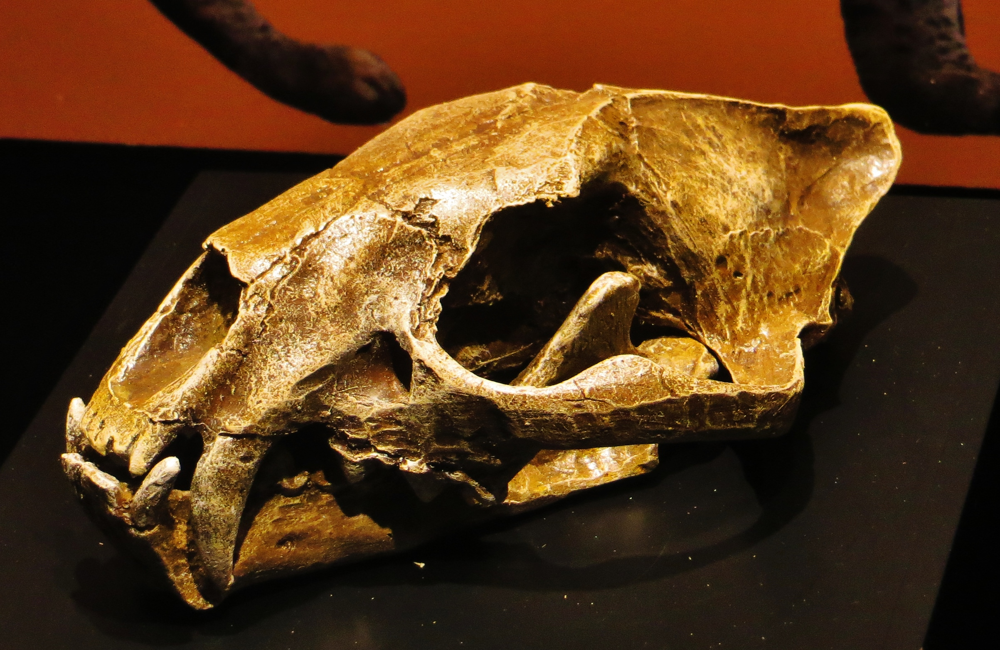

Proailurus lemanensis je vymřelý druh kočkovité šelmy, která žila v Evropě a Asii před zhruba 25 miliony let. Jeho fosílie byly nalezeny ve Španělsku, Německu a Mongolsku. Jde pravděpodobně o předka současných kočkovitých. Vymřel v raném miocénu.
Proailurus bylo malé zvíře jen o trochu větší než kočka domácí, nevážilo více než 9 kg. Mělo dlouhý ocas, velké oči, ostré drápy a zuby podobně jako dnešní cibetkovité šelmy (Viverridae). Bylo to pravděpodobně stromové zvíře.